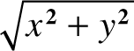
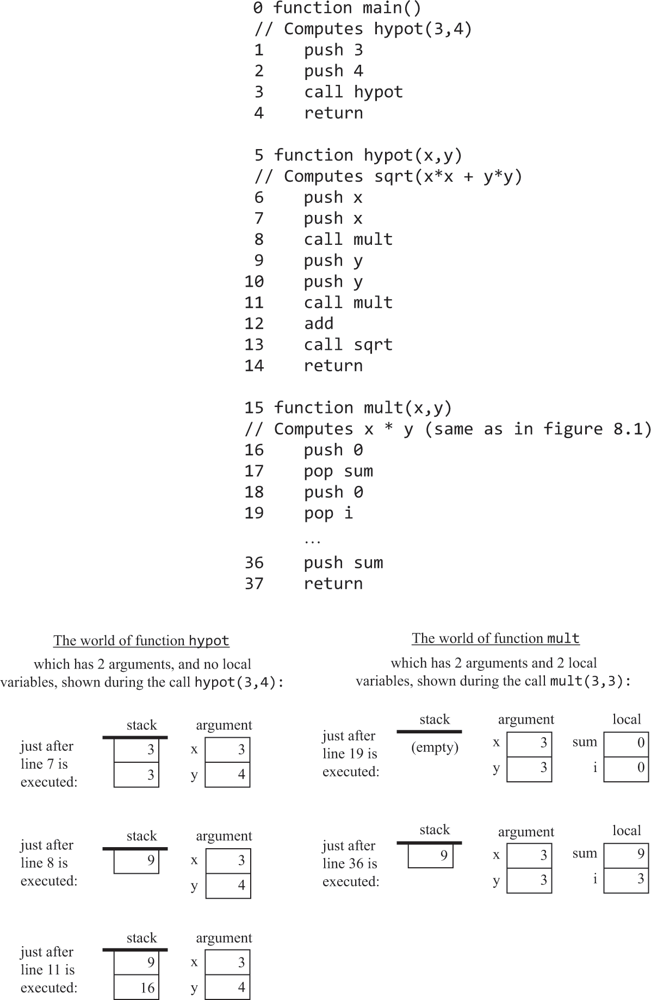
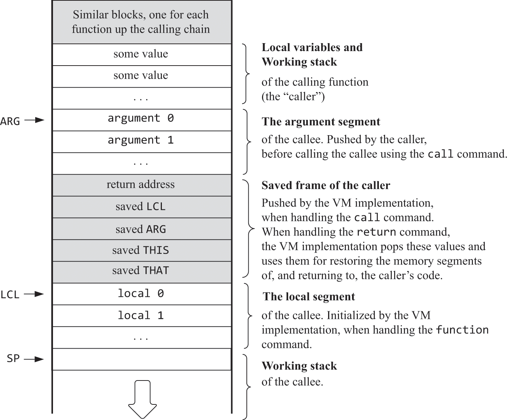
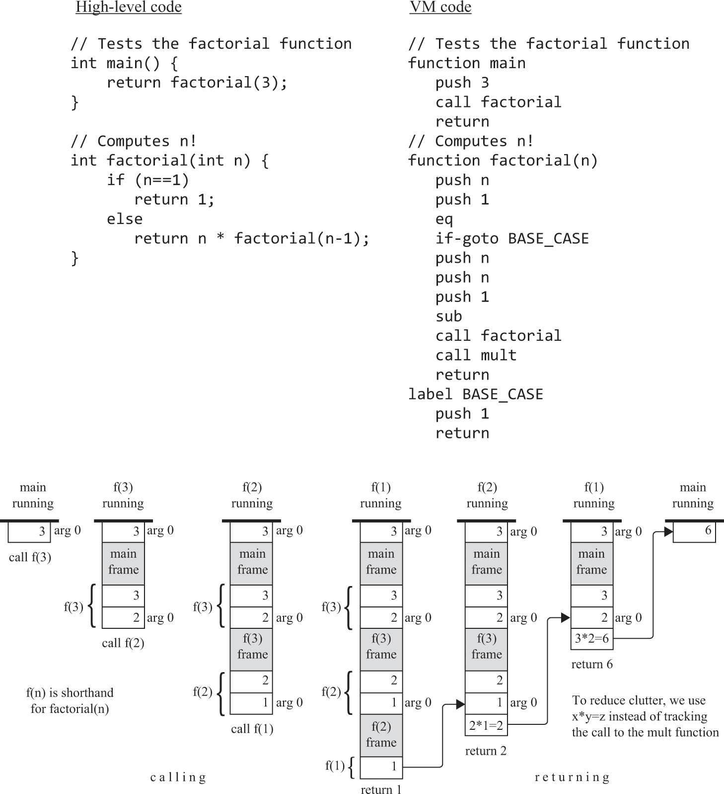
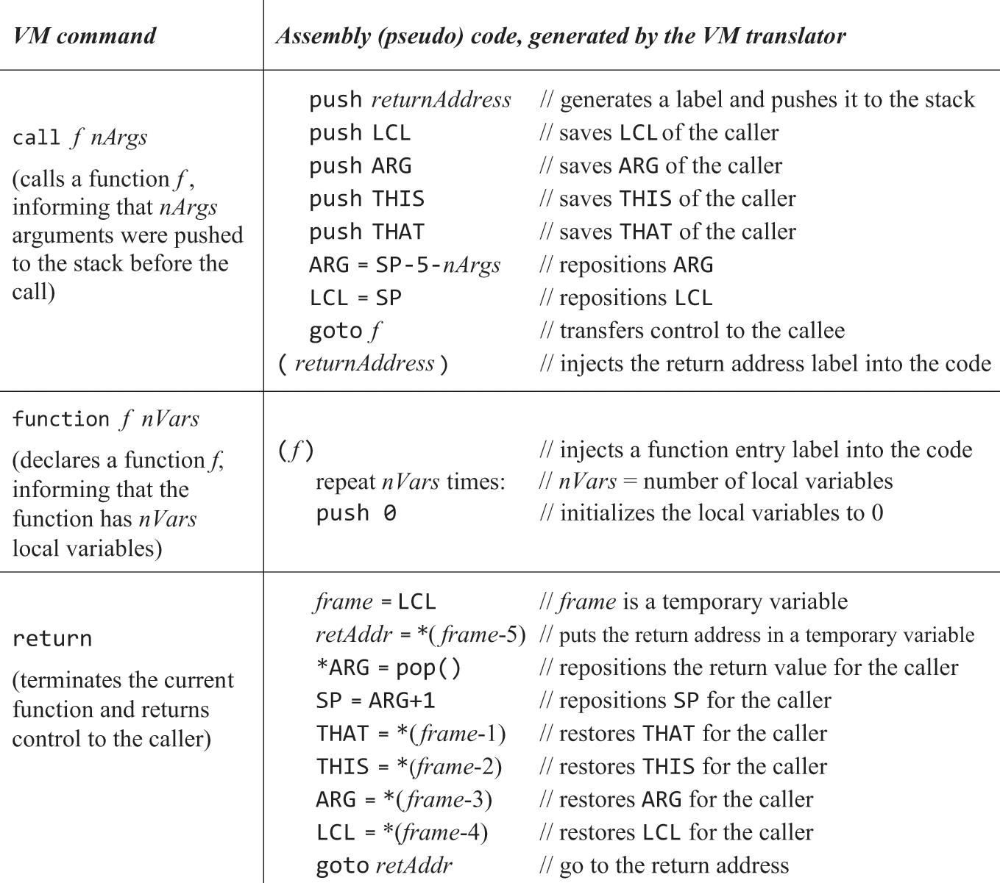
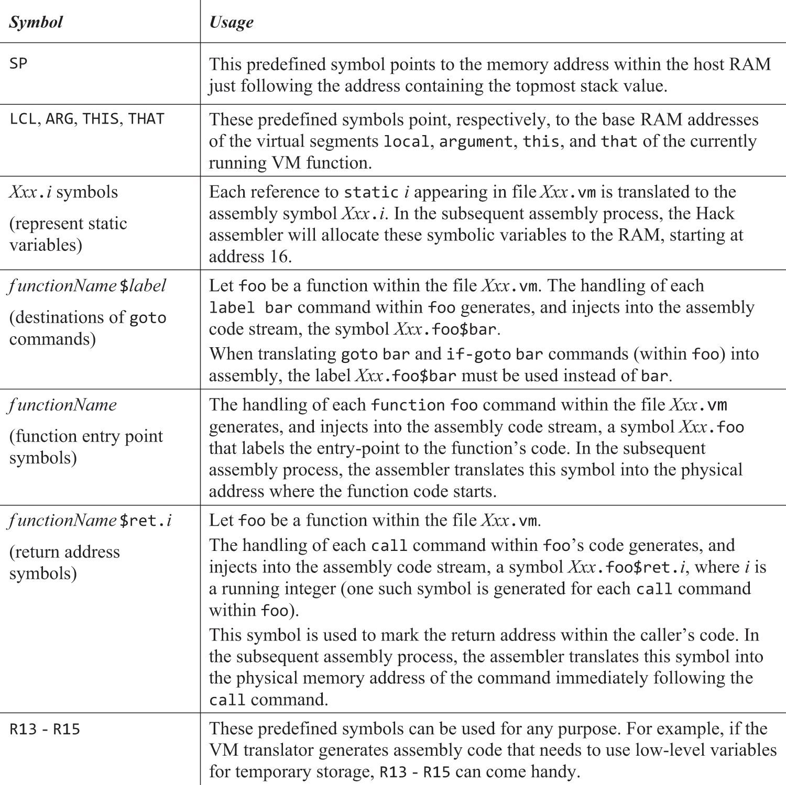
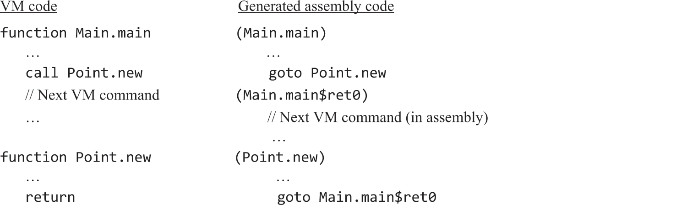
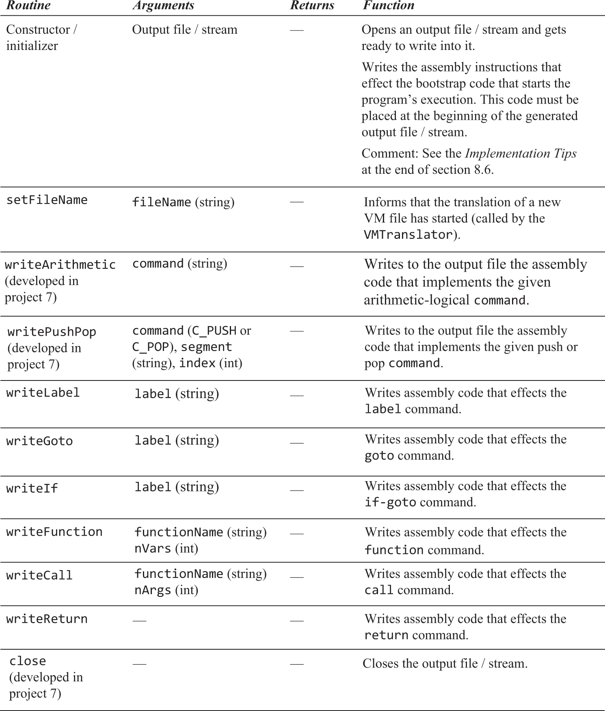

7.1 Stack Frames & Function Handling
Run Time System
- Controls:
- How to start program execution
- How to handle program termination
- How to pass function arguments
- How to allocate and free memory resources
- Realised via VM translator and its subsequent commands -
pop, push, add, etc- Along with this, some sort of ‘wrapper’ that acts as a sort of ‘main’ function for everything to work together
High Level Magic
- Allow writing programs in high level terms
- Primitive operations like
+ and -are built into the basic syntax, whereassqrt and powerare extensions of the language - High level languages allow us to never have to worry about how things like this get executed and how we execute multiple things one after another
- Similarly, high level code abstracts away the ability to branch between logic - conditional execution
- The overhead of functions are also abstracted away. Behind the scenes, it needs to:
- Save the return address (address in memory to return to once a function finishes executing)
- Save memory resources of the caller
- Allocate memory resources needed by the callee
- Make arguments from caller memory available to callee
- Execute the callee’s code
- Make the callee’s return value available to caller’s code
- Free the memory used by the callee
- Reinstate the saved memory from the caller
- Resume executing from the return address we initially saved
- The compiler or VM translator handles all of these things without the programmer ever having to worry about it
Branching
- By default, programs execute sequentially (one instruction after the other)
- We can ‘redirect’ this execution, a for loop, via branching
- Implemented using
gotoin assembly programming languages, followed by physical memory address of next instruction, or a symbolic label bound to an address
- Implemented using
- VM language supports conditional and unconditional branching
Unconditional Branching
- Using
goto, we jump to execute the command just after the label symbol
Conditional Branching
- Using
if-goto, we pop the stack- If it’s true, jump to the command after the label symbol
- If it’s false, execute the next command in the code
- We need to specify this condition before the
if-gotocommand
Examples
becomes:
- Consider a function that receives two arts
x and yand returns their product - This can be achieved by adding x repetitively to a local variable
sum, y times and then returning sum’s value
// Returns x*y
int mult(int x, int y) {
int sum = 0;
int i = 0;
while (i < y) {
sum += x;
i++;
}
return sum;
}
- After being compiled into VM code, it becomes:
// Returns x*y
function mult(x,y)
push 0
push sum
push 0
pop i
label WHILE_LOOP
push i
push y
lt
neg
if-goto WHILE_END
push sum
push x
add
pop sum
push i
push i
add
pop i
goto WHILE_LOOP
label WHILE_END
push sum
return
- Notice that we negate the result of the condition. This essentially says that we have looped all times and have achieved the condition and can now skip to 'after' the while loop
- This means pretty much every high level conditional
if / while / for / etccan be realised using onlygoto / if-gotocommands
Functions
- Programming languages have a set of fixed, built in operations
- In addition to this, they allow programmers to create their own operations (which are called functions)
- Both built-in and user-defined operations can be utilized in a similar manner, giving them a consistent feel in their application.
- In the context of our VM, a user defined function might be
multiply, for which we call after pushing two values onto the stack, just as we would for a built in one likeadd - We call user defined functions using
call <function>, where as built in ones are just<function>
- In the context of our VM, a user defined function might be
Example - hypot


- We can see that each function operates in their own stack universe, separate from the stack from it's parent uses
- Arguments and return variables magically (as we will soon see) travel through wormholes to get to new / existing stacks
Implementation
- We have a
calling chainwhich manages what function calls what, usually starting with main - Each function in the chain waits for the function in front of it to return it a variable
- The last in the chain is the currently executing function
- Functions have
localandargumenttemporary variables, stored inside their own stack- When the function starts executing, the memory is allocated and then freed once finished
- It can be realised that this is just another stack. A stack of stacks, where the first function in, is the last function out
Working Through foobar
- Assume the current function is
foo:foohas pushed some values onto its stack and modified entries in its memory segments. Each function call creates a new frame on the stack designated for its local and argument segments.
- When
foocallsbar, it pauses its execution:- The current state (or frame) of
fooremains on the stack, withbar's frame positioned on top. - Before
barterminates, it pushes a return value onto the stack (stored in the first argument slot ofbar's stack). - The
SP(Stack Pointer) is pointed to the address immediately following this value - This action effectively liberates the global stack's area beneath the new
SPvalue. - Consequently, when the caller (
foo) resumes its operations, it identifies the return value at the top of its working stack. - Before
bar's execution begins, pointers likeLCL, ARG, THIS, THATare saved in the beginning ofbar's stack frame to preserve the state offoo.
- The current state (or frame) of
- Functions can be seen as reducing complex execution to a single value (the return value). Conceptually, calling a function is akin to pushing a value onto the caller's stack.
- The combined set of working stacks and frames is termed the
global stack.

-
When a function (
functionName) is called:- The VM saves the current state of the caller by pushing its frame onto the stack.
- The start of the function is marked with a unique label derived from its name, facilitating a direct jump to execute the function's code.
- The generated assembly code is
goto <functionName>
-
Returning control to the caller:
- The
returncommand doesn't specify a return address since functions can serve any caller. - The solution involves:
- Saving the return address right before control transfers to the function.
- Retrieving this address when the function ends.
- The
-
How the
returnlocation is determined:- The exact return location is known: it's immediately after where the function was called. (essentially where the first argument for the callee is stored)
- The VM translator places a label at this spot in the generated assembly code and pushes this label (the return address) onto the stack.
-
When a
returncommand is seen:- The saved return address is popped off the stack.
- Control is then redirected back to the appropriate spot in the caller's code, ensuring smooth continuation post function call.
Example - factorial()

- Several snapshots of stack at various points
- Note: When we call
factorial, we don't get to callmultuntil that factorial function finishes, i.e. it reaches the base case (as it will keep calling itself recursively) - This means once we do reach the base case, we are essentially calling
multback to back to back until we reach main with the return value of each of the factorial functions
Side Note: This chapter has been incredibly therapuetic for me to read. The idea that some insane logical expression can be abstracted down to a single value which is only known by it's caller is entirely fascinating and completely eye opening for me. I struggle with anxiety, black / white thinking and understanding that there is an entire universe of thought outside of my own is relieving on a monumental scale.
Main sees 6. Mult sees 3 and 2.
If man is 5, then the devil is 6 and if the devil is 6, then god is 7. This monkey's gone to heaven.
Those moments will be lost... in time. Like tears... in rain. Time to die.
I love computer science.
"The implementation of the function call-and-return protocol is a beautiful example of low-level software engineering, so we can simply enjoy seeing it in action"
Specification of VM Language
- Note: VM Code is compiled, not written.
- \We have to understand what we have to write, before we can write it, i.e. design the compiler
Branching Commands
label <name>- Marks the current position in the function's code.
- Scope is limited to the defining function.
- Composed of letters, digits (not starting), dots, colons, or underscores.
goto <label>- Jumps to the specified label within the same function.
if-goto <label>- Conditionally jumps to the label if the top stack value (most recent) is truthy (-1).
- Otherwise, continues to the next command.
Function Commands
function <functionName> nVars:- Starts a function named
functionName. - Declares
nVarslocal variables.
- Starts a function named
call functionName nArgs:- Calls
functionName. - Assumes
nArgsarguments are already on the stack.
- Calls
return:- Resumes execution after the call command of the calling function.
- Note:
nVarsandnArgsis not # args, it's just the collection of args / vars
VM Program
- Generated from high level programs like Jack
- Each high level class file
File.jackis translated into a corresponding file with VM commandsFile.vm - Within each class, each function is translated into a VM function
File.Function- Each of these VM functions can see every other VM function and call each other regardless of file (ie. they’re global)
Program Entry Point
- Must exist a main
jackclass to create amain.vmfile which holds amain.mainfunction- This is the entry point of the program
- Start by calling
Sys.init, which then callsmain.main
Program Execution
- Executed using the VM emulator (amongst other means)
- Load a folder of
.vmfiles, the order of loaded files is significant - Resulting code base is a collection of the functions inside the
.vmfiles - On detection of an OS function,
Math.sqrtfor example, it will try to find the function in the VM code, otherwise it will use the built in version of that function - OS is built into the emulator, so no need to implement OS calls
- Load a folder of
Implementation of VM Language
- VM 2 Hack here we go
Function Call and Return
- Executed harmoniously by caller and callee
- The expectations of one is fulfilled by the other
- The VM implementation supports this by controlling the global stack
Caller's Perspective
- Needs to push expected arguments
nArgsfor callee onto the stack - Call the callee function
fileName.functionName nArgs - Callee returns, argument values that were pushed have disappeared and a return value has been pushed into the stack. Everything else is the same as it was left
staticmemory segment might have changed, everything else is the same andtempis undefined
Callee's Perspective
- My
argumentsegments have been filled with values passed by the caller - My
localsegments have been allocated and set to 0 - My
staticsegment has been set tostaticsegment of my parent VM file - My working stack is empty
this, that, pointer and tempare undefined- Before
return, I push a a return value onto the stack
VM Perspective
- Maintains the global stack
- Every
function,callandreturnis handled by generating assembly that manipulates the global stackcallgenerates code that saves the frame of the caller on the stack and jumps to execute calleefunctiongenerates code that initialises the local variables of the calleereturngenerates code that copes the return value to the top of the caller's working stack, reinstates segment pointers of the caller and jumps to execute from the return address onward

VM Mapping on The Hack Platform pt. II
The Stack
- RAM locations 0-15 are reserved for pointers and registers
- RAM locations 16-255 are reserved for static variables
- Stack is mapped from address 256 onwards
- VM sets
SPto256
- VM sets
- Commands like
pop, push, add, etcgenerate assembly code that manipulates the data stored in the address pointed to bySP
Special Symbols
- When generating assembly from VM commands, predefined symbols like
SP,LCLandARGare handled first - Function entry points and return addresses are generated next

Example - PointDemo
- The
PointDemoprogram has two Jack class files:Main.jackandPoint.jack. - When compiled, these produce two VM files:
Main.vmandPoint.vm.Main.vmcontains theMain.mainfunction.Point.vmcontains functions likePoint.new,Point.getx, andPoint.print.
- Using the VM translator on the
PointDemofolder creates one assembly code file:PointDemo.asm.- At this level, function abstractions are gone.
- Each function command in VM leads to an entry label in assembly.
- Each call command:
- Generates an assembly
gotoinstruction. - Creates a return address label, pushes it to the stack.
- Injects the label into the generated code.
- Generates an assembly
- Each return command:
- Pops the return address from the stack.
- Generates a
gotoinstruction in assembly.

Bootstrap Code
- Recall, stack starts in RAM address 256 and execution starts with calling
Sys.initand upon reset, load instruction inROM[0] - To execute code on start-up, we place this code in
ROM[0]
Usage
- Where source is
source.vmor a folder containing.vmfiles - Output is a single assembly file
source.asm
Design
- We can add more functionality to the three modules implemented in the previous chapter
parser, codewriter and VM Translator
VM Translator
- Constructs a
parserfor every.vmfile in the specified folder and acodewriterthat creates an output fileprog.asm - Enters a loop to iterate through each command in the
.vmfile- For each command,
codewritergenerates assembly code and stores it insideprog.asm - Every time a new
.vmfile is translated, acodewriterroutinesetFileNameis called
- For each command,
Parser
- Already fully implemented
CodeWriter

Examples